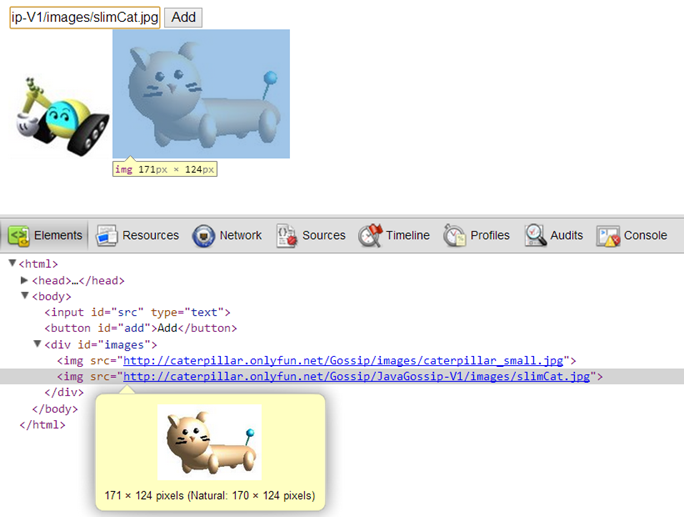

After parsing HTML, all created DOM elements will form a tree structure. Browsers will render all elements according to this tree. Once the DOM tree is changed, browser rendering changes simultaneously. This is the base of dynamically modifying a document.
The following example shows how to add and delete images dynamically.
<html>
<head>
<meta content="text/html; charset=UTF-8" http-equiv="content-type">
<script type="text/javascript">
window.onload = function() {
document.getElementById('add').onclick = function() {
var images = document.getElementById('images');
var img = document.createElement('img');
img.src = document.getElementById('src').value;
img.onclick = function() {
images.removeChild(this);
};
images.appendChild(img);
};
};
</script>
</head>
<body>
<input id="src" type="text"><button id="add">Add</button>
<div id="images"></div>
</body>
</html>There's no img tag in this document. After entering an image URL in the input box and pressing Add button, document.creatElement will create an img element dynamically. The element hasn't been appended to the DOM tree, so it doesn't appear on the page yet. You assign the src property the entered URL and the onclick event a function called when the image is clicked. The function will use the removeChild function of images (the div element with an id attributes) to remove this image. Finally, images uses appendChild to append the img element. Browsers render the page according to the new DOM tree now.
After JavaScript changes the DOM tree, however, you cannot see the modified HTML in the "View Source" window of browsers. The "View Source" window only shows the loaded static HTML. You have to use a tool, such as a DOM Inspector, to observe the dynamically-modified elements. For example, The Elements tab of Chrome Developer Tools is shown as follow:

A node can only have one parent node. Using appendChild to append an existing node on the DOM tree means the node will depart from its original parent node and be appended to the new one. For example:
<html>
<head>
<meta content="text/html; charset=UTF-8" http-equiv="content-type">
<script type="text/javascript">
window.onload = function() {
document.getElementById('image').onclick = function() {
var container1 = document.getElementById('container1');
var container2 = document.getElementById('container2');
if(this.parentNode === container1) {
container2.appendChild(this);
}
else {
container1.appendChild(this);
}
};
};
</script>
</head>
<body>
Container 1: <div id="container1">
<img id="image" src=
"https://openhome.cc/Gossip/images/caterpillar_small.jpg"/>
</div><br>
Container 2: <div id="container2"></div>
</body>
</html>In this example, the two div elements will append the img element alternately when it's clicked. Because a node can own only one parent node, appendChild will depart the appended element from the original parent node.
The createElement function is used to create an element corresponding with the specified tag. Creating a text node, however, needs the createTextNode function. A rarely-used createAttribute function is used to create an attribute. For example, appending text in <div id="console"></div> may use following code:
var text = document.createTextNode('your text ....');
document.getElementById('console').appendChild(text);
document.getElementById('console').appendChild(text);
You can also use insertBefore or replaceChild function to update a DOM tree. Take a look at DOM Document for details.
Note that browsers will re-render the page once a node is appended to the DOM tree. Frequently creating and appending nodes to the DOM tree will cause performance problems. It's recommended to organize a tree fragment in the background. Once the fragment is prepared, append its root node to the DOM tree. This way gets better performance.
The createDocumentFragment function can be used to create a DocumentFragment instance. You can use it to organize a tree fragment and then append the DocumentFragment instance to the DOM tree.
DOM elements have a non-standard innerHTML property used to return the contained HTML of an element. You can assign it a HTML string. Browsers will parse it and create corresponding elements. Modern browsers almost support it though it's not a standard property. In fact, HTML 5 accepts innerHTML as a standard property. For example, creating "<b>Hello</b>" in a div tag can be as follow:
document.getElementById('console').innerHTML = '<b>Hello</b>';
Note that Internet Explorer miraculously doesn't support the innerHTML assignment of the select element.